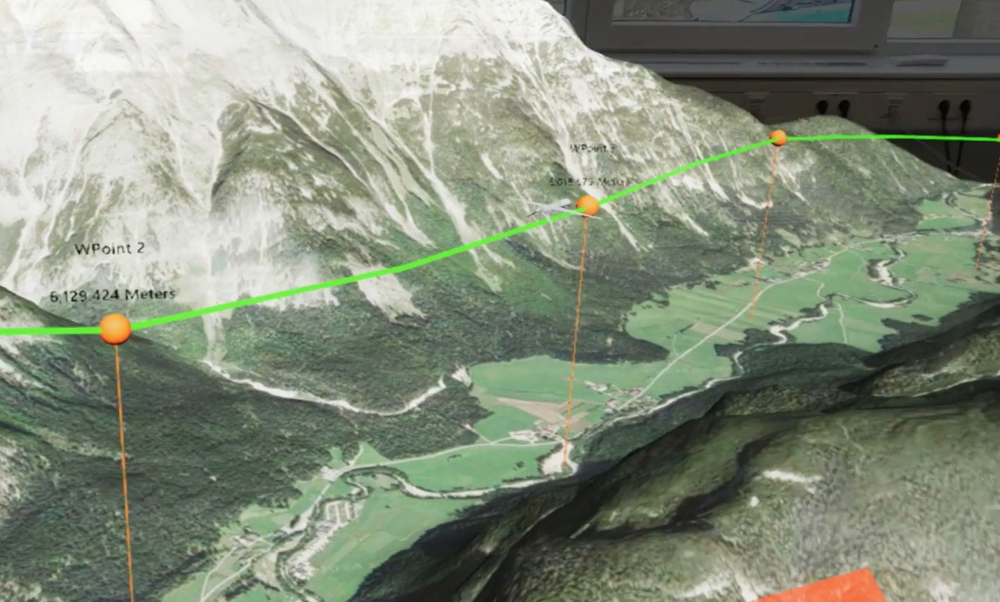

📂 Drohnen‐Einsatzplanung MR ‐Application
❗Hinweis zum laufenden Projekt: Bitte beachten Sie, dass dieses Projekt derzeit in Bearbeitung ist und vertraulich bleibt. In der aktuellen Phase kann ich keine umfangreichen Details über die Arbeit preisgeben. Ich werde jedoch versuchen, einen allgemeinen Überblick zu geben. Vielen Dank für Ihr Verständnis.
Die Drohnen-Missionsplanung Mixed-Reality-Anwendung, entwickelt am Deutschen Zentrum für Luft- und Raumfahrt (DLR), ist darauf ausgelegt, Drohnenoperationen in komplexen Umgebungen wie gebirgigen Gebieten und städtischen Landschaften mit hohen Bauwerken zu transformieren. Diese Anwendung vereinfacht die Planung und Simulation von Drohnenmissionen, verbessert die operationelle Kontrolle und Anpassungsfähigkeit unter schwierigen Bedingungen. Unter Verwendung von BlenderGIS habe ich detaillierte 3D-Geländemodelle erstellt und diese Modelle mittels eines von mir entwickelten benutzerdefinierten C++-Plugins in die Unreal Engine 5.0 integriert. Dies gewährleistet hochauflösende und interaktive Geländedaten. Zusätzlich werden echte GIS-Daten verwendet, um die Positionen und Höhen der Drohnen innerhalb des Mixed-Reality-Frameworks genau darzustellen. Dieser sorgfältige Ansatz zur Simulation wurde als Teil einer Forschungsanstrengung initiiert, die darauf abzielt, das Situationsbewusstsein unter Drohnenbetreibern zu verbessern und sicherzustellen, dass jede Mission mit maximaler Sicherheit und Effizienz durchgeführt wird
Verbesserte Planung und Interaktion durch integrierte Geländekarten
Die Integration von Geländekarten ist ein Kernmerkmal der Anwendung, das den Benutzern ermöglicht, strategisch Flugrouten in einer Mixed-Reality-Umgebung zu entwerfen. Entwickelt unter der Schirmherrschaft der DLR-Forschung zur Verbesserung des Situationsbewusstseins, ermöglicht dieses Feature den Operateuren, präzise Wegpunkte zu setzen und die Höhe der Drohnen so anzupassen, dass sie geschickt potenzielle Hindernisse wie Gebäude und Berge umfliegen können. Ich habe diese Funktionalitäten unter Verwendung des Microsoft Mixed Reality Toolkits (MRTK) 2.0, C++ und des Blueprint-Systems der Unreal Engine entwickelt, was die Benutzerinteraktion durch intuitive Handgesten verbessert. Die Möglichkeit, Routen interaktiv in einer Mixed-Reality-Umgebung zu planen, macht den Planungsprozess nicht nur immersiver, sondern steigert auch signifikant das Situationsbewusstsein der Operateure, reduziert operationelle Risiken und erhöht die Effektivität der Drohnenmissionen.Diese Anwendung wurde entwickelt und für HoloLens 2 getestet.
Echtzeit-Flugüberwachung mit fortschrittlicher Drohnensicht
Um die Forschungsziele zur Verbesserung des Situationsbewusstseins weiter zu unterstützen, habe ich ein "Drohnensicht"-Feature in die Drohnen-Missionsplanungsanwendung integriert. Dies bietet den Operateuren eine Perspektive aus der ersten Person des Drohnenwegs über eine an das Drohnenmodell in der Unreal Engine angebrachte virtuelle Kamera. Diese Fähigkeit bietet wichtige Echtzeit-Visuelle Rückmeldungen, die es den Operateuren ermöglichen, die Flüge eng zu überwachen und schnell informierte Entscheidungen zu treffen. Die Drohnensicht ist besonders entscheidend bei Operationen, bei denen direkter visueller Kontakt mit der Drohne behindert ist, und ermöglicht es den Operateuren, sicher und genau durch potenziell gefährliche Umgebungen zu navigieren.